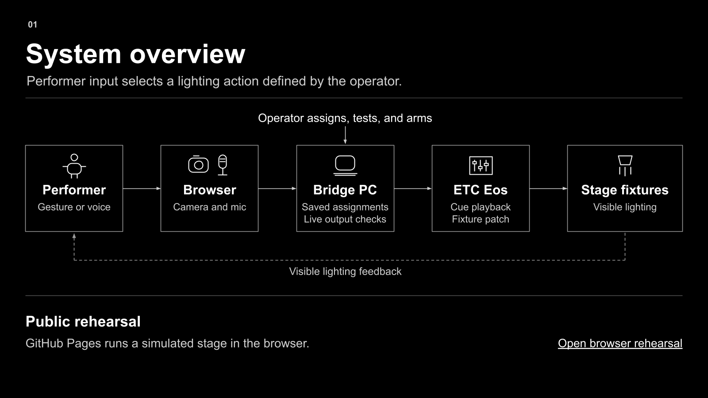
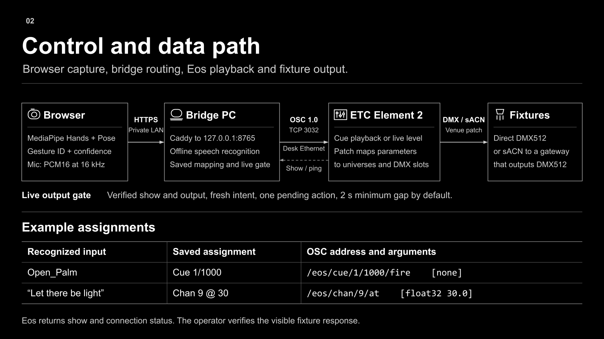

Overview
I joined Liz Magic Laser and Ruth Estévez as a lighting designer during their Fall 2026 residency at Barnard’s Movement Lab. During the experimental phase, I proposed an interactive lighting system that uses computer vision to recognize gestures and speech recognition to detect spoken phrases. The app translates audience movement and voice into commands for the lab’s ETC Eos console, which drives the stage fixtures.
The project draws on Power Moves, Liz Magic Laser’s collaboration with choreographer Cori Kresge. The work treats political gesticulation as a whole-body act of persuasion. The hands shape and deliver a message that can steady a room or unsettle it, reveal something or keep it hidden. In the lab, a gesture or a spoken phrase can work like an incantation. An open palm reveals the room. A fist sends it into darkness.
Rehearsal demo
A screen recording of Light Magic in rehearsal. Try gestures and voice commands in your browser with simulated stage lighting.
In-lab test 1
The first in-lab test of Light Magic, recorded with Version 1.
System architecture
The browser recognizes gestures from camera input. In a shared session, it sends microphone audio over private HTTPS to the bridge for offline speech recognition. The bridge checks the mapping and live state before sending an OSC command over TCP. ETC Eos applies the venue’s fixture patch to drive the lights.




Discussion
The program establishes a workflow that other Movement Lab artists can adapt to their own shows. Each artist can choose the movements and phrases that belong in the piece, map them to lighting actions, and rehearse those mappings before running them on the console.
I’m also exploring how to make ETC Eos more approachable for artists who are new to lighting programming. One direction is a simpler interface for building and testing lighting looks. Another is using a language model to turn a plain-language description into draft Eos cues or channel settings that an artist can review, adjust, and rehearse.